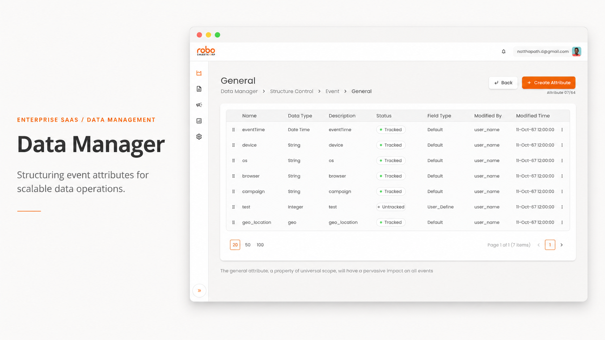
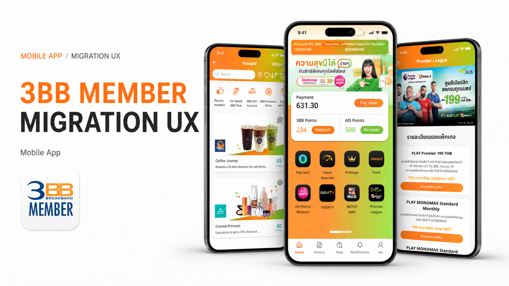

UX/UI PRODUCT DESIGNER · BANGKOK
Complexity is my job, so it isn't the user's.
I've designed for enterprise SaaS, a telecom app with over a million users, and retail POS terminals — turning unclear requirements into interfaces that make sense.
Get in touchSelected work
Customer Data Platform
I made an existing customer data platform easier to understand and build on. The work covered 20+ product areas, 109 import/export frames, and 12 journey node types.
Case study →
3BB Member App and Website
I designed migration states for a live telecom product with over a million users. Each customer group got the right status, explanation, and next action.
Case study →
Counter Service POS
I improved hierarchy on POS screens without moving the controls cashiers already knew. The approved spec covered 800×600 and 1920×1080 terminals.
View spec →
About
Natthapath Damrongsri — I work at the intersection of complex logic and everyday use.
My approach focuses on creating long-term structural value, not just cleaner screens. I look for the rules, constraints, and decisions that will keep shaping the product after handoff.
Bridging engineering feasibility and business goals is part of the design work. I write, explain, and prototype until the team is making the same decision together.
Contact
Let's talk about what you're building.